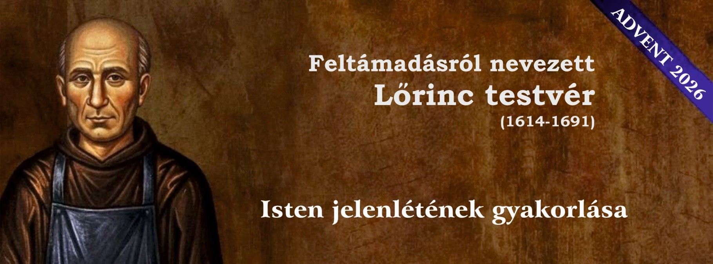

A Sarutlan Kármeliták szeretettel hívják, hogy csatlakozzon online lelkigyakorlatunkhoz
Az elmélkedés, a pihenés és a megújulás ideje
Jelentkezés
Kapja meg a lelkigyakorlat elmélkedéseit közvetlenül e-mailben, és engedje, hogy a kármelita lelkiség vezesse az advent vagy a nagyböjt útján
Adatvédelmi szabályzat
Marketingplatformként a Mailchimp szolgáltatását használjuk. Az alábbi feliratkozás gombra kattintva hozzájárul ahhoz, hogy adatait feldolgozás céljából továbbítsuk a Mailchimpnek.
A Mailchimp adatvédelmi szabályzatáról itt olvashat bővebben.Aktuális lelkigyakorlat

Advent 2026 – a Feltámadásról nevezett Lőrinc testvérrel
A Kármel kevéssé ismert alakja, Feltámadásról nevezett Lőrinc testvér a 17. század egyik nagy lelki mestere volt. Tanítása – amelyet XIV. Leó pápa nemrégiben ismét a figyelem középpontjába állított – ma is meglepően időszerű.
Ez az egyszerű, szerzetesi szolgálatot végző testvér arra tanít bennünket, hogyan élhetünk Isten jelenlétében mindennapjainkban. Tanítása abba a nagy keresztény hagyományba illeszkedik, amely Jézusnak a szüntelen imádságra szóló meghívásából fakad: „… szüntelen kell imádkozni, és nem szabad belefáradni.” (Lk 18,1), valamint Szent Pál apostol buzdításából: „Imádkozzatok szüntelenül!” (1Tessz 5,17). Lőrinc testvér számára az út egyszerű: maradjunk Isten jelenlétében minden pillanatban, bármivel is foglalatoskodjunk.
Ebben az adventi időszakban szeretnénk meghívni Önöket, hogy közösen felfedezzük fel Isten jelenlétének e kiváló tanítását, és ezáltal növekedjünk az Úrral való egyszerűbb, bizalomtelibb és bensőségesebb kapcsolatban.
Tartalom
Minden pénteken az e-mail-postafiókjába érkezik:
gyakorlati útmutatás a tanítás mindennapi életben való megvalósításához
adventi naptár
Korábbi lelkigyakorlatok
Válogatás a korábbi évek lelkigyakorlataiból
Kármelita lelki mesterek
Lelkigyakorlatainkon bemutatott szentek és ikonok
GYIK
Gyakran ismételt kérdések
Mi az online lelkigyakorlat?
Az online lelkigyakorlat célja, hogy az evangéliumok fényében elmélyítse Jézussal való lelki kapcsolatunkat. Ennek érdekében az advent és a nagyböjt minden hetében e-mailben küldünk elmélkedéseket.
Milyen gyakran kapok üzeneteket?
Egy üdvözlő e-mailt, majd adventben és nagyböjtben hetente egy-egy e-mailt kap.
Van részvételi díj?
A jelentkezés ingyenes. Önkéntes adománnyal támogathatja ezt az apostoli szolgálatot.
Nem kapok e-mailt – mit tegyek?
Ellenőrizze a levélszemét mappát. Ha valamelyik anyagról lemaradt, ezen a weboldalon az archívumban is megtalálja.
Adja tovább a hírt
Hívja meg barátait és családtagjait a lelkigyakorlatra az oldal megosztásával: online-exerzitien.karmel.at/hu.
Javasoljuk, hogy töltse le és nyomtassa ki a lelkigyakorlat plakátját, és ossza meg plébániáján, közösségében vagy imacsoportjában. Áldott adventi időt és gyümölcsöző lelkigyakorlatot kívánunk!
Plakát